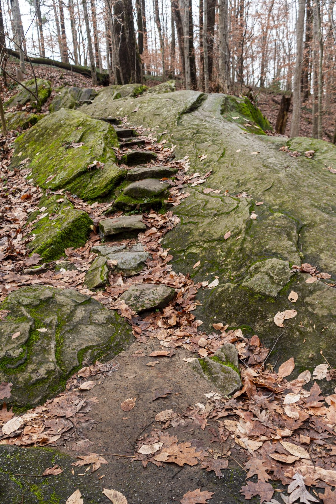

SAKURI
広島県尾道市土堂
尾道市土堂のベーカリー
電話する 070-9034-1285パンのお店(ベーカリー)/ 尾道市土堂
広島県尾道市土堂にあるベーカリーです。営業時間などの詳しい情報は、確認でき次第こちらに掲載します。
| 営業時間 | 準備中(お問い合わせください) |
|---|---|
| 定休日 | 準備中(お問い合わせください) |

パンについて


商品や価格は準備中です。取り扱いについては、お電話またはInstagramでお問い合わせください。
メニューのページへ(準備中)